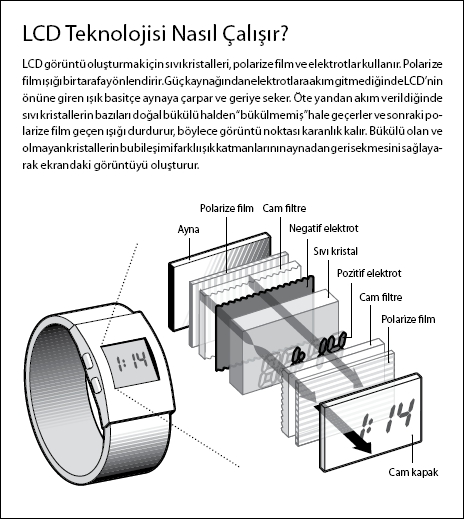

Bir havuç LCD'lerin icadının yolunu nasıl açtı?
Rahiel Nasir, teknoloji yorumcusu ve yazar
Sıvı kristal ekranların (LCD'ler) kökeni sıradan bir havuca dayandırılabilir. 1888'de Avusturyalı botanikçi ve kimyacı Friedrich Reinitzer bir havuçtan kolesterolü çıkardıktan sonra, kolesterolün ilginç bir özelliğe sahip olduğunu fark etti: Ne sıvı ne de katı kristallere sahipti, ikisinin arasında bir yerdeydi. Reinitzer, kolesterolün garip bir şekilde iki erime noktasının olduğunu ve ışığı ilginç şekillerde yansıttığını gördü.
"LCD'ler günlük hayatımızın vazgeçilmez bir parçası haline geldi. LCD'ler, dizüstü bilgisayarlarda, cep telefonlarında, düz ekran televizyonlarda, GPS cihazlarında ve pek çok diğer ticari ve profesyonel ekipmanda bulunmaktadır."
Rahiel Nasir
Bu buluş bilimciler arasında bir fırtına yarattı, ama henüz kimse ona faydalı bir kullanım alanı bulamıyordu. 1900'lerin başında kimi bilimciler sıvı kristallerle uğraşıp onları ince levhaların arasına akıtıyordu. Fakat ilk pratik uygulamayı bulmak büyük bir şirkete nasip oldu.

1936 yılında sıvı kristalin potansiyelini fark eden Marconi Kablosuz Telgraf Şirketi "sıvı kristal ışık valfi"nin patentini aldı. Ama asıl büyük yenilik altmışlı yıllarda mühendis George Heilmeier'in ABD Radyo Şirketi'ndeki meslektaşı Richard Williams'ın çalışmasının önemini kavrayınca gerçekleşti. Williams ince bir sıvı kristal tabakasından geçirilen bir elektrik akımının çizgili bir görüntü yarattığını saptadı. Heilmeier bunun potansiyelini fark ederek, sıvı kristallerin ekranlarda kullanılmasını önerdi. Böylece LCD doğdu.
Yetmişli yıllara gelindiğinde LCD'ler kol saatlerinin içindeydi. Doksanlara gelindiğinde bu teknoloji sonunda katot ışınlı tüp ekranların yerini alarak televizyonlarda kullanıldı. Günümüzde LCD'ler saatlerden dizüstü bilgisayarlara, DVD oynatıcılarına ve akıllı telefonlara varıncaya kadar pek çok alette kullanılmaktadır. Nasir'in de dediği gibi, "LCD ekranlar modern dünyanın her yerindeler."